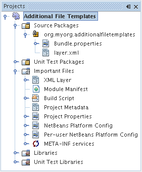

Apache NetBeans
Apache NetBeansLatest release
Руководство по созданию модулей шаблонов файлов на платформе NetBeans
| This tutorial needs a review. You can open a JIRA issue, or edit it in GitHub following these contribution guidelines. |
В этом руководстве демонстрируется создание модуля, содержащего шаблоны файлов. После установки этого модуля в среде IDE в мастере создания файла будут доступны шаблоны файлов. Наличие модуля, содержащего шаблоны файлов, упрощает их совместное использование: среда IDE позволяет создать двоичный файл, который будет доступен другим пользователям посредством его установки с помощью диспетчера подключаемых модулей.
Шаблон файла состоит из файла шаблона, файла описания в формате HTML и значка. Файл описания в формате HTML используется для вывода информации о шаблоне в мастере создания файла. Значок идентифицирует шаблон и отличает его от других шаблонов в мастере создания файла. В этом руководстве рассматривается создание нового шаблона файла путем копирования содержимого существующего шаблона файла в пустой файл. Затем после настройки файла описания для мастера создания файла и отличительного значка необходимо зарегистрировать шаблон, файл описания в формате HTML и значок в файле настройки NetBeans, т.е. в файле layer.xml .
Дополнительно, в целях поиска и устранения ошибок, можно загрузить готовые примеры и изучить исходный код.
Введение в FreeMarker
Начиная с версии среды IDE NetBeans 6.0, для определения шаблонов файлов можно дополнительно использовать язык шаблонов FreeMarker. Так определяются некоторые шаблоны, связанные со средой IDE. Например, шаблон класса Java определен следующим образом:
<#assign licenseFirst = "/*">
<#assign licensePrefix = " * ">
<#assign licenseLast = " */">
<#include "../Licenses/license-${project.license}.txt">
<#if package?? && package != "">
package ${package};
</#if>
/**
*
* @author ${user}
*/
public class ${name} {
}В приведенном выше шаблоне можно увидеть преимущество использования FreeMarker, который позволяет добавить к шаблонам логику с помощью таких директив, как if/elseif/else, и операторов цикла. Для ознакомления с полным описанием языка шаблонов FreeMarker см. документ FreeMarker Manual, в частности, главу Directives. В этом руководстве, среди прочего, описаны действия, которые необходимо выполнить для включения языка FreeMarker в шаблоны файлов.
Создание проекта модуля
Сначала выполните все действия в мастере создания проекта модуля, в результате чего для нового модуля будет создана структура исходных файлов со всеми минимальными требованиями.
-
Выберите (Ctrl-Shift-N). В области "Categories" выберите "NetBeans Modules". В области "Projects" выберите "Module Project" и нажмите кнопку "Next".
-
На экране "Name and Location" введите
AdditionalFileTemplatesв поле "Project Name". В поле "Project Location" укажите любой каталог на компьютере. Установите переключатель "Standalone Module" и флажок "Set as Main Project". Нажмите кнопку "Next".
-
На экране "Basic Module Configuration" замените
yourorghereв поле "Code Name Base" наmyorg; чтобы основа названия кода выглядела какorg.myorg.additionalfiletemplates. Добавьте пробелы к значению поля "Module Display Name" по умолчанию; имя должно измениться наAdditional File Templates. Не изменяйте местоположение пакета локализации и файла layer.xml для их сохранения в пакете с именемorg/myorg/additionalfiletemplates. Нажмите кнопку "Finish".
Средой IDE будет создан проект Additional File Templates . Проект содержит все исходные файлы и метаданные проекта, например, сценарий сборки Ant. Проект открывается в среде IDE. Логическую структуру проекта можно просмотреть в окне "Projects" (Ctrl-1), а структуру файлов – в окне "Files" (Ctrl-2). Например, окно "Projects" теперь должно выглядеть следующим образом:

Создание шаблона файла
Шаблон файла состоит из файла шаблона, файла описания в формате HTML и значка. Простой способ создания нового шаблона файла состоит в копировании содержимого существующего шаблона файла в пустой файл. Затем после настройки файла описания для мастера создания файла и отличительного значка необходимо зарегистрировать шаблон в файле layer.xml .
Создание файла шаблона
-
Щелкните правой кнопкой мыши узел
Additional File Templatesи выберите "New > Other". В мастере создания файла в области "Categories" выберите "Other" и в области "File Types" выберите "HTML". Нажмите кнопку "Next".
-
Введите
Descriptionв "File Name". Нажмите кнопку "Browse" и перейдите кsrc/org/myorg/additionalfiletemplates. Нажмите кнопку "Select Folder". Нажмите кнопку "Finish".
В редакторе исходного кода откроется новый файл HTML с именем HTML.html , содержащий стандартную структуру файла HTML:
<!DOCTYPE HTML PUBLIC "-//W3C//DTD HTML 4.01 Transitional//EN">
<html>
<head>
<title></title>
</head>
<body>
</body>
</html>-
Измените файл HTML в соответствии с требованиями. При необходимости можно добавить следующие предварительно определенные переменные:
-
${date} вставляет текущую дату в следующем формате: Feb 16, 2008.
-
${encoding} вставляет кодировку по умолчанию, например: UTF-8.
-
${name} вставляет имя файла.
-
${nameAndExt} вставляет имя файла вместе с расширением.
-
${package} вставляет имя пакета, в котором был создан файл.
-
${time} вставляет текущее время в следующем формате: 7:37:58 PM.
-
${user} вставляет имя пользователя.
-
Значения этих переменных можно установить в окне Template Manager, которое можно вызвать из меню "Tools". Выполните прокрутку вниз до пункта "User Configuration Properties". Файл user.properties в этом узле можно использовать для установки перечисленных выше значений с целью замены значений, предоставляемых системой. Однако обычно это не требуется, так как для работы достаточно стандартных значений указанных переменных.
|
Кроме предварительно определенных переменных, пользователям через модуль могут быть предоставлены дополнительные переменные. Это вопрос рассматривается далее в данном руководстве. Для добавления логики к шаблону можно также использовать полный список директив FreeMarker:
-
#assign
-
#else
-
#elseif
-
#end
-
#foreach
-
#if
-
#include
-
#list
-
#macro
-
#parse
-
#set
-
#stop
В качестве примера рассмотрим определение шаблона класса Java:
<#assign licenseFirst = "/*">
<#assign licensePrefix = " * ">
<#assign licenseLast = " */">
<#include "../Licenses/license-${project.license}.txt">
<#if package?? && package != "">
package ${package};
</#if>
/**
*
* @author ${user}
*/
public class ${name} {
}Для получения сведений о директиве #assign см. Предоставление лицензии на работу с проектом. Для ознакомления с полным описанием языка шаблонов FreeMarker см. документ FreeMarker Manual, в частности, главу Directives.
Создание файла описания
-
Щелкните правой кнопкой мыши узел
org.myorg.additionalfiletemplatesи выберите "New > Other". В области "Categories" выберите "Other". В области "File Types" выберите "HTML File". Нажмите кнопку "Next". ВведитеHTMLв "File Name". Нажмите кнопку "Browse" и перейдите кsrc/org/myorg/additionalfiletemplates. Нажмите кнопку "Select Folder". Нажмите кнопку "Finish".
В редакторе исходного кода откроется пустой файл HTML, и его узел появится в окне "Projects".
-
Введите "
Creates new HTML file" (без кавычек) между тегами<body>. Файл должен выглядеть следующим образом:
<!DOCTYPE HTML PUBLIC "-//W3C//DTD HTML 4.01 Transitional//EN">
<html>
<head>
<title></title>
</head>
<body>
Creates new HTML file.
</body>
</html>Получение значка
В мастере создания файла шаблон файла сопровождается значком. Он идентифицирует шаблон и отличает его от других шаблонов файлов. Размер значка должен быть 16×16 пикселей.
Присвойте значку имя icon.png и добавьте его к пакету org.myorg.additionalfiletemplates .
Окно "Projects" теперь должно выглядеть следующим образом:

Регистрация шаблона файла
После создания шаблона файла его следует зарегистрировать в файловой системе среды NetBeans. С этой целью создается файл layer.xml .
-
Добавьте следующие строки между тегами
<filesystem>в файлеlayer.xml:
<folder name="Templates">
<folder name="Other">
<attr name="SystemFileSystem.localizingBundle" stringvalue="org.myorg.additionalfiletemplates.Bundle"/>
<file name="MyHTML.html" url="HTML.html">
<attr name="template" boolvalue="true"/>
<attr name="SystemFileSystem.localizingBundle" stringvalue="org.myorg.additionalfiletemplates.Bundle"/>
<attr name="SystemFileSystem.icon" urlvalue="nbresloc:/org/myorg/additionalfiletemplates/icon.png"/>
<attr name="templateWizardURL" urlvalue="nbresloc:/org/myorg/additionalfiletemplates/Description.html"/>
*<!--Эту строку следует использовать только в том случае, если в шаблоне используется язык шаблонов FreeMarker:-->*
<attr name="javax.script.ScriptEngine" stringvalue="freemarker"/>
</file>
</folder>
</folder>-
Добавьте отображаемое имя к файлу
Bundle.properties:
Templates/Other/MyHTML.html=My HTML FileСборка и установка модуля
Для сборки и установки модуля в среде IDE используется сценарий сборки Ant. Сценарий сборки создается автоматически при создании проекта модуля.
Установка модуля NetBeans
В окне "Projects" щелкните правой кнопкой мыши проект Additional File Templates и выберите "Install/Reload" в поле "Target Platform".
Модуль компонуется и устанавливается в целевой среде IDE или платформе. После открытия целевой среды IDE или платформы новый модуль можно протестировать. По умолчанию целевая среда IDE или платформа представляют собой систему, используемую текущим экземпляром среды разработки IDE.
| При запуске модуля используется временный каталог тестового пользователя, а не каталог пользователя среды разработки IDE. |
Работа с модулем NetBeans
-
Выберите (Ctrl-Shift-N) и создайте новый проект.
-
Щелкните правой кнопкой мыши проект и выберите . В открывшемся мастере создания файла отобразится новая категория с новым типом файла. Экран должен выглядеть примерно следующим образом (значок может быть другим):

-
Выберите новый тип файла, нажмите кнопку "Next" и создайте новый файл. При нажатии кнопки "Finish" только что созданный шаблон должен появиться в редакторе исходного кода.
Создание совместно используемого двоичного модуля
-
В окне "Projects" щелкните правой кнопкой мыши проект
Additional File Templatesи выберите "Create NBM".
Будет создан файл NBM, который можно просмотреть в окне "Files" (Ctrl-2):

-
Этот файл можно распространить среди коллег, например, по электронной почте.
Предоставление дополнительных переменных
Как было указано ранее, предварительно определенные переменные, такие как ${user} и ${time}, можно дополнить собственными переменными. Например, для передачи переменной, соответствующей списку имен, шаблон можно определить следующим образом:
<!DOCTYPE HTML PUBLIC "-//W3C//DTD HTML 4.01 Transitional//EN">
<html>
<head>
<title></title>
</head>
<body>
<#list names as oneName>
<b&gt${oneName}</b&gt
</#list>
</body>
</html>Приведенная выше директива #list языка FreeMarker выполняет итерации с помощью переменной "names" с каждым экземпляром, называемым "oneName". Каждое значение итерации выводится в файл между тегами выделения полужирным. Значение "names" может поступать из различных мест; как правило, это экран мастера, где пользователь, в данном случае, должен был выбрать ряд имен из списка.
Для реализации такой процедуры, т.е. выполнения итераций с помощью новой переменной, см. описание в документе FreeMarker in NetBeans IDE 6.0: First Scenario, а также обсуждение DataObject.createFromTemplate(df, targetName, hashMap) в этом сообщении блога.
Предоставление лицензии на работу с проектом
Еще один не рассмотренный ранее вопрос относится к директиве #assign языка FreeMarker, применение которой уместно в случае, если пользователю разрешено при создании файла создавать лицензию на работу с проектом. Для отражения требований пользователя по лицензированию можно добавить в шаблон файла директивы лицензирования. После этого все файлы в проекте пользователя будут создаваться с этими директивами лицензирования.
Для этого выполните следующие действия:
-
Перейдите в меню "Tools". Выберите "Templates". Откройте в редакторе шаблон "Java | Java Class":

-
Указанный выше шаблон и способы его определения при помощи FreeMarker были описаны ранее. Тем не менее, рассмотрим подробно первые четыре строки:
<#assign licenseFirst = "/*">
<#assign licensePrefix = " * ">
<#assign licenseLast = " */">
<#include "../Licenses/license-${project.license}.txt">Эти четыре строки имеют отношение к лицензированию. Последняя строка определяет лицензию, которая будет использоваться для каждого проекта. Первые три строки определяют символы перед каждой строкой в лицензии и после нее. Выше приведены четыре строки для исходных файлов Java. Этот же набор определений можно найти в начале шаблона файла "Properties":
<#assign licensePrefix = "# ">
<#include "../Licenses/license-${project.license}.txt">В первой строке сообщается, что каждой строке лицензии будут предшествовать символы "#" вместо символа "", который является префиксом для исходных файлов Java ("/" – для первой строки и "*/" – для последней). Для проверки создайте исходный файл Java, а затем файл "Properties". В обоих случаях появится лицензия. Однако символы, предшествующие каждой строке и завершающие ее, будут разными из-за указанных выше определений.
-
Теперь рассмотрим непосредственно лицензию. Найдите следующую строку в приведенных выше шаблонах:
<#include "../Licenses/license-${project.license}.txt">Обратите внимание на эту часть:
${project.license}Поместите этот фрагмент в качестве ключа в файл приложения nbproject/project.properties . Теперь добавьте значение. Например:
project.license=apacheЗатем снова откройте окно Template Manager в папке "Licenses". На экране появится несколько шаблонов. Создайте новый шаблон с именем " license-apache.txt ". Теперь можно просто скопировать существующий шаблон и вставить его в ту же самую категорию в Template Manager. В следующий раз при создании файла, который определен шаблоном FreeMarker, содержащим строку:
<#include "../Licenses/license-${project.license}.txt">-
в только что созданный файл будет вложена указанная лицензия.
Таким образом, среда IDE NetBeans 6.0 позволяет пользователю определять для каждого проекта лицензию, которая должна отображаться в каждом соответствующем файле. Кроме того, представим, что пользователю необходимо создать новый проект с другой лицензией. При условии, что у пользователя в окне Template Manager есть ряд лицензий, использовать новую лицензию столь же просто, как добавить к файлу nbproject/project.properties пару "ключ-значение". Невозможное стало возможным благодаря поддержке языка FreeMarker в среде IDE NetBeans 6.0. Для получения дополнительных сведений о лицензировании, особенно о комментариях в конце лицензии, см. это сообщение в блоге.
Что дальше?
Для получения дополнительной информации о создании и разработке модуля NetBeans см. следующие материалы:
Версии
| Версия | Дата | Изменения |
|---|---|---|
1 |
26 июня 2005 г. |
Начальная версия |
2 |
28 июня 2005 г. |
* К файлу описаний добавлены теги выделения полужирным для отображения в диалоговом окне "Description" тегов HTML.
* Добавлены атрибуты упорядочивания.
* Отображаемые имена перемещены в "Bundle.properties".
* Изменен снимок экрана в разделе "Работа с подключаемым модулем NetBeans".
* В качестве расширения имени файла к файлу "BrandedJavaClass" добавлен ".template", так как |
3 |
2 октября 2005 г. |
* Все руководство пересмотрено в соответствии с последней версией среды. Внесено несколько изменений, главным образом потому, что шаблоны заменили собой окно "Options" для шаблонов. * К введению добавлены новые 2-ой и 3-ий параграфы, поясняющие, что при создании нового типа файла необходимость в данном руководстве отсутствует. |
4 |
3 октября 2005 г. |
* templateWizard [Iterator |
URL] в layer.xml заменен на instantiating[Iterator |
WizardURL], так как templateWizard[Iterator |
URL] устарел. |
5 |
16 марта 2006 г. |
* Все руководство пересмотрено; немного скорректирован междустрочный интервал, все функционирует по-прежнему. * Необходимо заменить снимки экрана из-за отличающихся значков. * Необходимо добавить к документу значок, а не только ссылку на местоположение. * Необходимо показать, как в мастере создания файла можно одновременно создать несколько шаблонов файлов. |
6 |
12 сентября 2006 г. |
* Все руководство пересмотрено в соответствии с версией среды IDE NetBeans 5.5 Beta 2. * Проблемы отсутствуют, все работает в точности, как описано. * Обновлены некоторые снимки экранов. * Зафиксированы отступы в коде. |
7 |
9 июня 2007 г. |
Начало перехода к NetBeans 6. |
8 |
16 февраля 2008 г. |
Начало переноса информации в данное руководство из этого сообщения в блоге, этого сообщения в блоге, а также из еще одного сообщения в блоге и из данной статьи. |
9 |
15 апреля 2008 г. |
Стили (значок, оглавление, таблица требуемого программного обеспечения) обновлены в соответствии с новым форматом. |